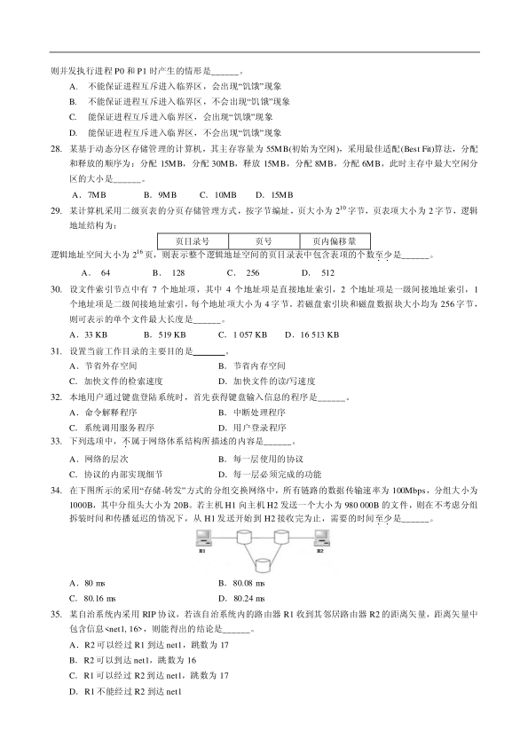
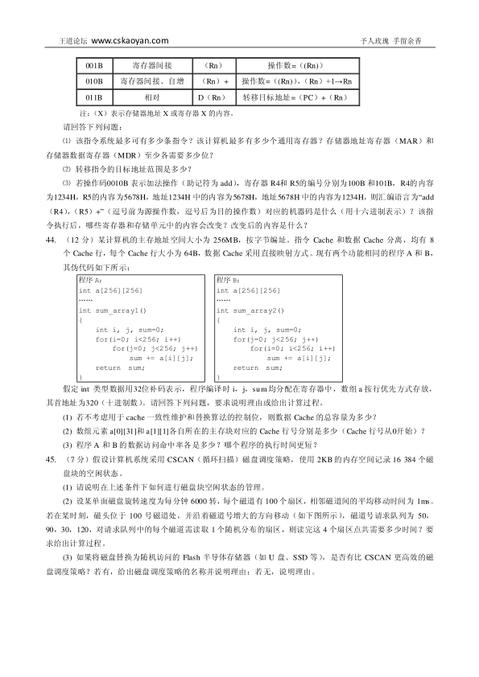
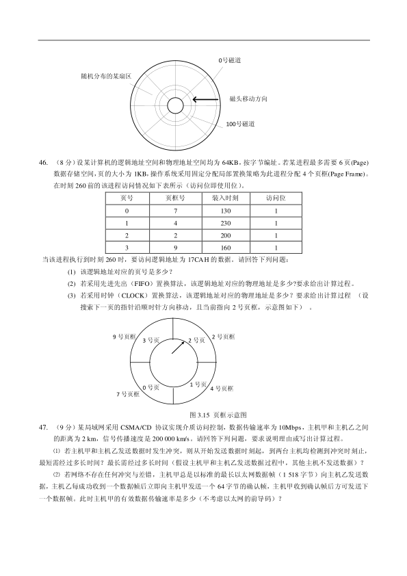
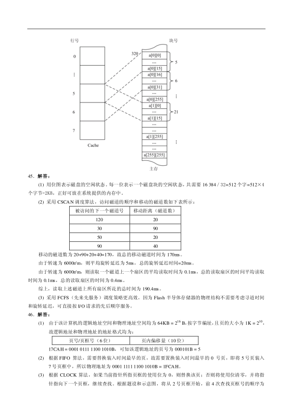
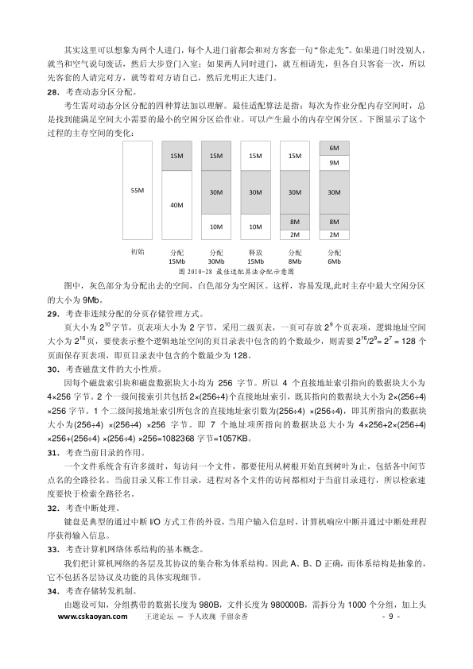

第 1 / 16 页

2010 年全国硕士研究生入学统一考试
计算机科学与技术学科联考
计算机学科专业基础综合试题
一、单项选择题：第1~40 小题，每小题2 分，共80 分。下列每题给出的四个选项中，只有一个选项最符合试
题要求。
1.
若元素a、b、c、d、e、f 依次进栈，允许进栈、退栈操作交替进行，但不允许连续三次进行退栈操作，则
不．可能得到的出栈序列是______。
A．d c e b f a B．c b d a e f C．b c a e f d D．a f e d c b
2.
某队列允许在其两端进行入队操作，但仅允许在一端进行出队操作。若元素a、b、c、d、e 依次入此队列
后再进行出队操作，则不．可能得到的出队序列是______。
A．b a c d e B．d b a c e C．d b c a e D．e c b a d
3.
下列线索二叉树中（用虚线表示线索），符合后序线索树定义的是______。
A．
B．
C．
D．
4.
在右图所示的平衡二叉树中，插入关键字48 后得到一棵新平衡二叉树。在新平
衡二叉树中，关键字37 所在结点的左、右子结点中保存的关键字分别是______。
A．13，48
B．24，48
C．24，53
D、24，90
5.
在一棵度为4 的树T 中，若有20 个度为4 的结点，10 个度为3 的结点，1 个度
为2 的结点，10 个度为1 的结点，则树T 的叶结点个数是______。
A．41 B．82 C．113 D．122
6.
对n（n≥2）个权值均不相同的字符构造成哈夫曼树。下列关于该哈夫曼树的叙述中，错误
．．的是______。
A．该树一定是一棵完全二叉树。
B．树中一定没有度为1 的结点。
C．树中两个权值最小的结点一定是兄弟结点。
D．树中任一非叶结点的权值一定不小于下一层任一结点的权值。
7.
若无向图G=（V, E）中含有7 个顶点，要保证图G 在任何情况下都是连通的，则需要的边数最少是_____。
A．6 B．15 C．16 D．21
8.
对右图进行拓扑排序，可以得到不同的拓扑序列的个数是_____。
A．4 B． 3 C．2 D．1
9.
已知一个长度为16 的顺序表L，其元素按关键字有序排列。若采用折半查
找法查找一个L 中不存在的元素，则关键字的比较次数最多的是_____。
A．4 B．5 C．6 D．7
10.
采用递归方式对顺序表进行快速排序。下列关于递归次数的叙述中，正确的是______。
A．递归次数与初始数据的排列次序无关。
a
b
c
d
Null
a
b
c
d
Null
Null
a
b
c
d
Null
a
b
c
d
Null
e
d
a
b
c
24
13
53
37
90
查看 / 复制本页文字
2010 年全国硕士研究生入学统一考试 计算机科学与技术学科联考 计算机学科专业基础综合试题 一、单项选择题：第1~40 小题，每小题2 分，共80 分。下列每题给出的四个选项中，只有一个选项最符合试 题要求。 1. 若元素a、b、c、d、e、f 依次进栈，允许进栈、退栈操作交替进行，但不允许连续三次进行退栈操作，则 不．可能得到的出栈序列是______。 A．d c e b f a B．c b d a e f C．b c a e f d D．a f e d c b 2. 某队列允许在其两端进行入队操作，但仅允许在一端进行出队操作。若元素a、b、c、d、e 依次入此队列 后再进行出队操作，则不．可能得到的出队序列是______。 A．b a c d e B．d b a c e C．d b c a e D．e c b a d 3. 下列线索二叉树中（用虚线表示线索），符合后序线索树定义的是______。 A． B． C． D． 4. 在右图所示的平衡二叉树中，插入关键字48 后得到一棵新平衡二叉树。在新平 衡二叉树中，关键字37 所在结点的左、右子结点中保存的关键字分别是______。 A．13，48 B．24，48 C．24，53 D、24，90 5. 在一棵度为4 的树T 中，若有20 个度为4 的结点，10 个度为3 的结点，1 个度 为2 的结点，10 个度为1 的结点，则树T 的叶结点个数是______。 A．41 B．82 C．113 D．122 6. 对n（n≥2）个权值均不相同的字符构造成哈夫曼树。下列关于该哈夫曼树的叙述中，错误 ．．的是______。 A．该树一定是一棵完全二叉树。 B．树中一定没有度为1 的结点。 C．树中两个权值最小的结点一定是兄弟结点。 D．树中任一非叶结点的权值一定不小于下一层任一结点的权值。 7. 若无向图G=（V, E）中含有7 个顶点，要保证图G 在任何情况下都是连通的，则需要的边数最少是_____。 A．6 B．15 C．16 D．21 8. 对右图进行拓扑排序，可以得到不同的拓扑序列的个数是_____。 A．4 B． 3 C．2 D．1 9. 已知一个长度为16 的顺序表L，其元素按关键字有序排列。若采用折半查 找法查找一个L 中不存在的元素，则关键字的比较次数最多的是_____。 A．4 B．5 C．6 D．7 10. 采用递归方式对顺序表进行快速排序。下列关于递归次数的叙述中，正确的是______。 A．递归次数与初始数据的排列次序无关。 a b c d Null a b c d Null Null a b c d Null a b c d Null e d a b c 24 13 53 37 90
第 2 / 16 页
B．每次划分后，先处理较长的分区可以减少递归次数。
C．每次划分后，先处理较短的分区可以减少递归次数。
D．递归次数与每次划分后得到的分区的处理顺序无关。
11.
对一组数据(2，12，16，88，5，10)进行排序，若前三趟排序结果如下：
第一趟排序结果：2，12，16，5，10，88
第二趟排序结果：2，12，5，10，16，88
第三趟排序结果：2，5，10，12，16，88
则采用的排序方法可能是______。
A．起泡排序 B．希尔排序
C．归并排序
D．基数排序
12.
下列选项中，能缩短程序执行时间的措施是
。
Ⅰ. 提高CPU 时钟频率
Ⅱ. 优化数据通路结构
Ⅲ. 对程序进行编译优化
A．仅Ⅰ和Ⅱ B．仅Ⅰ和Ⅲ
C．仅Ⅱ和Ⅲ D．Ⅰ、Ⅱ和Ⅲ
13.
假定有4 个整数用8 位补码分别表示r1=FEH，r2=F2H，r3=90H，r4=F8H，若将运算结果存放在一个8 位
寄存器中，则下列运算中会发生溢出的是
。
A．r1 x r2
B．r2 x r3
C．r1 x r4
D．r2 x r4
14.
假定变量i、f 和d 的数据类型分别为int,float 和double（int 用补码表示，float 和double 分别用IEEE754
单精度和双精度浮点数格式表示），已知i=785,f=1.5678e3,d=1.5e100。若在32 位机器中执行下列关系表达
式，则结果为“真”的是
。
（I）i == (int)(float)i
(II)f == (float)(int)f
(III)f == (float)(double)f
(IV)(d+f)-d == f
A．仅I 和II
B．仅I 和III C．仅II 和III
D．仅III 和IV
15.
15．假定用若干个2kx4 位的芯片组成一个8kx8 位的存储器，则地址0B1FH 所在芯片的最小地址是
。
A．0000H B．0600H C．0700H D．0800H
16.
下列有关RAM 和ROM 的叙述中，正确的是
。
I RAM 是易失性存储器，ROM 是非易失性存储器
II RAM 和ROM 都采用随机存取方式进行信息访问
III RAM 和ROM 都可用作Cache
IV RAM 和ROM 都需要进行刷新
A．仅I 和II B．仅II 和III
C．仅I,II 和IV
D．仅II，III 和IV
17.
下列命中组合情况中，一次访存过程中不．可能发生的是
。
A．TLB 未命中，Cache 未命中，Page 未命中
B．TLB 未命中，Cache 命中，Page 命中
C．TLB 命中，Cache 未命中，Page 命中
D．TLB 命中，Cache 命中，Page 未命中
18.
下列寄存器中，汇编语言程序员可见的是
。
A．存储器地址寄存器(MAR)
B．程序计数器(PC)
C．存储器数据寄存器(MDR)
D．指令寄存器(IR)
19.
下列选项中，不．会引起指令流水线阻塞的是
。
A．数据旁路（转发）
B．数据相关
C．条件转移
D．资源冲突
查看 / 复制本页文字
B．每次划分后，先处理较长的分区可以减少递归次数。 C．每次划分后，先处理较短的分区可以减少递归次数。 D．递归次数与每次划分后得到的分区的处理顺序无关。 11. 对一组数据(2，12，16，88，5，10)进行排序，若前三趟排序结果如下： 第一趟排序结果：2，12，16，5，10，88 第二趟排序结果：2，12，5，10，16，88 第三趟排序结果：2，5，10，12，16，88 则采用的排序方法可能是______。 A．起泡排序 B．希尔排序 C．归并排序 D．基数排序 12. 下列选项中，能缩短程序执行时间的措施是 。 Ⅰ. 提高CPU 时钟频率 Ⅱ. 优化数据通路结构 Ⅲ. 对程序进行编译优化 A．仅Ⅰ和Ⅱ B．仅Ⅰ和Ⅲ C．仅Ⅱ和Ⅲ D．Ⅰ、Ⅱ和Ⅲ 13. 假定有4 个整数用8 位补码分别表示r1=FEH，r2=F2H，r3=90H，r4=F8H，若将运算结果存放在一个8 位 寄存器中，则下列运算中会发生溢出的是 。 A．r1 x r2 B．r2 x r3 C．r1 x r4 D．r2 x r4 14. 假定变量i、f 和d 的数据类型分别为int,float 和double（int 用补码表示，float 和double 分别用IEEE754 单精度和双精度浮点数格式表示），已知i=785,f=1.5678e3,d=1.5e100。若在32 位机器中执行下列关系表达 式，则结果为“真”的是 。 （I）i == (int)(float)i (II)f == (float)(int)f (III)f == (float)(double)f (IV)(d+f)-d == f A．仅I 和II B．仅I 和III C．仅II 和III D．仅III 和IV 15. 15．假定用若干个2kx4 位的芯片组成一个8kx8 位的存储器，则地址0B1FH 所在芯片的最小地址是 。 A．0000H B．0600H C．0700H D．0800H 16. 下列有关RAM 和ROM 的叙述中，正确的是 。 I RAM 是易失性存储器，ROM 是非易失性存储器 II RAM 和ROM 都采用随机存取方式进行信息访问 III RAM 和ROM 都可用作Cache IV RAM 和ROM 都需要进行刷新 A．仅I 和II B．仅II 和III C．仅I,II 和IV D．仅II，III 和IV 17. 下列命中组合情况中，一次访存过程中不．可能发生的是 。 A．TLB 未命中，Cache 未命中，Page 未命中 B．TLB 未命中，Cache 命中，Page 命中 C．TLB 命中，Cache 未命中，Page 命中 D．TLB 命中，Cache 命中，Page 未命中 18. 下列寄存器中，汇编语言程序员可见的是 。 A．存储器地址寄存器(MAR) B．程序计数器(PC) C．存储器数据寄存器(MDR) D．指令寄存器(IR) 19. 下列选项中，不．会引起指令流水线阻塞的是 。 A．数据旁路（转发） B．数据相关 C．条件转移 D．资源冲突
第 3 / 16 页
20.
下列选项中的英文缩写均为总线标准的是______。
A．PCI、CRT、USB、EISA
B．ISA、CPI、VESA、EISA
C．ISA、SCSI、RAM、MIPS
D．ISA、EISA、PCI、PCI-Express
21.
单级中断系统中，中断服务程序内的执行顺序是______。
I 保护现场
II 开中断
III 关中断
IV 保存断点
V 中断事件处理
VI 恢复现场
VII 中断返回
A．I->V->VI->II->VII
B．III->I->V->VII
C．III->IV->V->VI->VII
D．IV->I->V->VI->VII
22.
假定一台计算机的显示存储器用DRAM 芯片实现，若要求显示分辨率为1600*1200，颜色深度为24 位，
帧频为85HZ，显存总带宽的50%用来刷新屏幕，则需要的显存总带宽至少约为______。
A．245Mbps B．979Mbps
C．1 958Mbps D．7 834Mbps
23.
下列选项中，操作系统提供给应用程序的接口是_____。
A．系统调用
B．中断
C．库函数
D．原语
24.
下列选项中，导致创建新进程的操作是______。
Ⅰ用户登录成功
Ⅱ设备分配
Ⅲ启动程序执行
A．仅Ⅰ和Ⅱ
B．仅Ⅱ和Ⅲ
C．仅Ⅰ和Ⅲ
D．Ⅰ、Ⅱ和Ⅲ
25.
设与某资源关联的信号量初值为3，当前值为1。若M 表示该资源的可用个数，N 表示等待该资源的进程
数，则M、N 分别是______。
A．0、1
B．1、0
C．1、2
D．2、0
26.
下列选项中，降低进程优先级的合理时机是_____。
A.
进程的时间片用完
B.
进程刚完成I/O，进入就绪列队
C.
进程长期处于就绪列队中
D.
进程从就绪态转为运行态
27.
进程P0 和P1 的共享变量定义及其初值为
boolean flag[2];
int turn = 0;
flag[0] = FALSE; flag[1] = FALSE;
若进程P0 和P1 访问临界资源的类C 伪代码实现如下：
void P1()
// 进程P1
{
while(TRUE)
{
flag[1]=TRUE; turn=0;
while(flag[0]&&(turn==0))
;
临界区;
flag[1]=FALSE;
}
}
void P0() // 进程P0
{
while(TRUE)
{
flag[0]=TRUE; turn=1;
while(flag[1]&&(turn==1))
;
临界区;
flag[0]=FALSE;
}
}
查看 / 复制本页文字
20.
下列选项中的英文缩写均为总线标准的是______。
A．PCI、CRT、USB、EISA
B．ISA、CPI、VESA、EISA
C．ISA、SCSI、RAM、MIPS
D．ISA、EISA、PCI、PCI-Express
21.
单级中断系统中，中断服务程序内的执行顺序是______。
I 保护现场
II 开中断
III 关中断
IV 保存断点
V 中断事件处理
VI 恢复现场
VII 中断返回
A．I->V->VI->II->VII
B．III->I->V->VII
C．III->IV->V->VI->VII
D．IV->I->V->VI->VII
22.
假定一台计算机的显示存储器用DRAM 芯片实现，若要求显示分辨率为1600*1200，颜色深度为24 位，
帧频为85HZ，显存总带宽的50%用来刷新屏幕，则需要的显存总带宽至少约为______。
A．245Mbps B．979Mbps
C．1 958Mbps D．7 834Mbps
23.
下列选项中，操作系统提供给应用程序的接口是_____。
A．系统调用
B．中断
C．库函数
D．原语
24.
下列选项中，导致创建新进程的操作是______。
Ⅰ用户登录成功
Ⅱ设备分配
Ⅲ启动程序执行
A．仅Ⅰ和Ⅱ
B．仅Ⅱ和Ⅲ
C．仅Ⅰ和Ⅲ
D．Ⅰ、Ⅱ和Ⅲ
25.
设与某资源关联的信号量初值为3，当前值为1。若M 表示该资源的可用个数，N 表示等待该资源的进程
数，则M、N 分别是______。
A．0、1
B．1、0
C．1、2
D．2、0
26.
下列选项中，降低进程优先级的合理时机是_____。
A.
进程的时间片用完
B.
进程刚完成I/O，进入就绪列队
C.
进程长期处于就绪列队中
D.
进程从就绪态转为运行态
27.
进程P0 和P1 的共享变量定义及其初值为
boolean flag[2];
int turn = 0;
flag[0] = FALSE; flag[1] = FALSE;
若进程P0 和P1 访问临界资源的类C 伪代码实现如下：
void P1()
// 进程P1
{
while(TRUE)
{
flag[1]=TRUE; turn=0;
while(flag[0]&&(turn==0))
;
临界区;
flag[1]=FALSE;
}
}
void P0() // 进程P0
{
while(TRUE)
{
flag[0]=TRUE; turn=1;
while(flag[1]&&(turn==1))
;
临界区;
flag[0]=FALSE;
}
}
第 4 / 16 页

则并发执行进程P0 和P1 时产生的情形是______。
A.
不能保证进程互斥进入临界区，会出现“饥饿”现象
B.
不能保证进程互斥进入临界区，不会出现“饥饿”现象
C.
能保证进程互斥进入临界区，会出现“饥饿”现象
D.
能保证进程互斥进入临界区，不会出现“饥饿”现象
28.
某基于动态分区存储管理的计算机，其主存容量为55MB(初始为空闲)，采用最佳适配(Best Fit)算法，分配
和释放的顺序为：分配15MB，分配30MB，释放15MB，分配8MB，分配6MB，此时主存中最大空闲分
区的大小是______。
A．7MB
B．9MB
C．10MB
D．15MB
29.
某计算机采用二级页表的分页存储管理方式，按字节编址，页大小为210 字节，页表项大小为2 字节，逻辑
地址结构为：
页目录号
页号
页内偏移量
逻辑地址空间大小为216 页，则表示整个逻辑地址空间的页目录表中包含表项的个数至少
．．是______。
A． 64
B． 128
C． 256
D． 512
30.
设文件索引节点中有7 个地址项，其中4 个地址项是直接地址索引，2 个地址项是一级间接地址索引，1
个地址项是二级间接地址索引，每个地址项大小为4 字节。若磁盘索引块和磁盘数据块大小均为256 字节，
则可表示的单个文件最大长度是______。
A．33 KB
B．519 KB
C．1 057 KB D．16 513 KB
31.
设置当前工作目录的主要目的是_______。
A．节省外存空间
B．节省内存空间
C．加快文件的检索速度
D．加快文件的读/写速度
32.
本地用户通过键盘登陆系统时，首先获得键盘输入信息的程序是______。
A．命令解释程序
B．中断处理程序
C．系统调用服务程序
D．用户登录程序
33.
下列选项中，不．属于网络体系结构所描述的内容是______。
A．网络的层次
B．每一层使用的协议
C．协议的内部实现细节
D．每一层必须完成的功能
34.
在下图所示的采用“存储-转发”方式的分组交换网络中，所有链路的数据传输速率为100Mbps，分组大小为
1000B，其中分组头大小为20B。若主机H1 向主机H2 发送一个大小为980 000B 的文件，则在不考虑分组
拆装时间和传播延迟的情况下，从H1 发送开始到H2 接收完为止，需要的时间至少
．．是______。
A．80 ms
B．80.08 ms
C．80.16 ms
D．80.24 ms
35.
某自治系统内采用RIP 协议，若该自治系统内的路由器R1 收到其邻居路由器R2 的距离矢量，距离矢量中
包含信息<net1, 16>，则能得出的结论是______。
A．R2 可以经过R1 到达net1，跳数为17
B．R2 可以到达net1，跳数为16
C．R1 可以经过R2 到达net1，跳数为17
D．R1 不能经过R2 到达net1
查看 / 复制本页文字
则并发执行进程P0 和P1 时产生的情形是______。 A. 不能保证进程互斥进入临界区，会出现“饥饿”现象 B. 不能保证进程互斥进入临界区，不会出现“饥饿”现象 C. 能保证进程互斥进入临界区，会出现“饥饿”现象 D. 能保证进程互斥进入临界区，不会出现“饥饿”现象 28. 某基于动态分区存储管理的计算机，其主存容量为55MB(初始为空闲)，采用最佳适配(Best Fit)算法，分配 和释放的顺序为：分配15MB，分配30MB，释放15MB，分配8MB，分配6MB，此时主存中最大空闲分 区的大小是______。 A．7MB B．9MB C．10MB D．15MB 29. 某计算机采用二级页表的分页存储管理方式，按字节编址，页大小为210 字节，页表项大小为2 字节，逻辑 地址结构为： 页目录号 页号 页内偏移量 逻辑地址空间大小为216 页，则表示整个逻辑地址空间的页目录表中包含表项的个数至少 ．．是______。 A． 64 B． 128 C． 256 D． 512 30. 设文件索引节点中有7 个地址项，其中4 个地址项是直接地址索引，2 个地址项是一级间接地址索引，1 个地址项是二级间接地址索引，每个地址项大小为4 字节。若磁盘索引块和磁盘数据块大小均为256 字节， 则可表示的单个文件最大长度是______。 A．33 KB B．519 KB C．1 057 KB D．16 513 KB 31. 设置当前工作目录的主要目的是_______。 A．节省外存空间 B．节省内存空间 C．加快文件的检索速度 D．加快文件的读/写速度 32. 本地用户通过键盘登陆系统时，首先获得键盘输入信息的程序是______。 A．命令解释程序 B．中断处理程序 C．系统调用服务程序 D．用户登录程序 33. 下列选项中，不．属于网络体系结构所描述的内容是______。 A．网络的层次 B．每一层使用的协议 C．协议的内部实现细节 D．每一层必须完成的功能 34. 在下图所示的采用“存储-转发”方式的分组交换网络中，所有链路的数据传输速率为100Mbps，分组大小为 1000B，其中分组头大小为20B。若主机H1 向主机H2 发送一个大小为980 000B 的文件，则在不考虑分组 拆装时间和传播延迟的情况下，从H1 发送开始到H2 接收完为止，需要的时间至少 ．．是______。 A．80 ms B．80.08 ms C．80.16 ms D．80.24 ms 35. 某自治系统内采用RIP 协议，若该自治系统内的路由器R1 收到其邻居路由器R2 的距离矢量，距离矢量中 包含信息<net1, 16>，则能得出的结论是______。 A．R2 可以经过R1 到达net1，跳数为17 B．R2 可以到达net1，跳数为16 C．R1 可以经过R2 到达net1，跳数为17 D．R1 不能经过R2 到达net1
第 5 / 16 页
36.
若路由器R 因为拥塞丢弃IP 分组，则此时R 可向发出该IP 分组的源主机发送的ICMP 报文类型是______。
A．路由重定向
B．目的不可达
C．源点抑制
D．超时
37.
某网络的IP 地址空间为192.168.5.0/24，采用定长子网划分，子网掩码为255.255.255.248，则该网络中的
最大子网个数、每个子网内的最大可分配地址个数分别是______。
A．32，8
B．32，6
C．8，32
D．8，30
38.
下列网络设备中，能够抑制广播风暴的是______。
Ⅰ中继器
Ⅱ集线器
Ⅲ网桥
Ⅳ路由器
A．仅Ⅰ和Ⅱ
B．仅Ⅲ
C．仅Ⅲ和Ⅳ
D．仅Ⅳ
39.
主机甲和主机乙之间已建立了一个TCP 连接，TCP 最大段长度为1 000 字节。若主机甲的当前拥塞窗口为
4 000 字节，在主机甲向主机乙连续发送两个最大段后，成功收到主机乙发送的第一个段的确认段，确认段
中通告的接收窗口大小为2 000 字节，则此时主机甲还可以向主机乙发送的最大字节数是______。
A．1 000
B．2 000
C．3 000
D．4 000
40.
如果本地域名服务器无缓存，当采用递归方法解析另一网络某主机域名时，用户主机、本地域名服务器发
送的域名请求消息数分别为______。
A．一条、一条
B．一条、多条
C．多条、一条
D．多条、多条
二、综合应用题：第41~47 题，共70 分。
41.
（10 分）将关键字序列（7、8、30、11、18、9、14）散列存储到散列表中。散列表的存储空间是一个下
标从0 开始的一维数组，散列函数为：H(key) = (keyx3) MOD 7，处理冲突采用线性探测再散列法，要求装
填（载）因子为0.7。
(1) 请画出所构造的散列表。
(2) 分别计算等概率情况下查找成功和查找不成功的平均查找长度。
42.
（13 分）设将n（n>1）个整数存放到一维数组R 中。试设计一个在时间和空间两方面都尽可能高效的算
法。将R 中保存的序列循环左移p（0<p<n）个位置，即将R 中的数据由（X0, X1…Xn-1）变换为（Xp,
Xp+1 …Xn-1, X0, X1…Xp-1）。要求：
⑴给出算法的基本设计思想。
⑵根据设计思想，采用C 或C++或JAVA 语言描述算法，关键之处给出注释。
⑶说明你所设计算法的时间复杂度和空间复杂度。
43.
（11 分）某计算机字长为16 位，主存地址空间大小为128KB，按字编址。采用单字长指令格式，指令各
字段定义如下：
15
12 11
6 5
0
OP
Ms
Rs
Md
Rd
源操作数 目的操作数
转移指令采用相对寻址方式，相对偏移量用补码表示，寻址方式定义如下：
Ms/Md
寻址方式
助记符
含义
000B
寄存器直接
Rn
操作数=（Rn）
查看 / 复制本页文字
36. 若路由器R 因为拥塞丢弃IP 分组，则此时R 可向发出该IP 分组的源主机发送的ICMP 报文类型是______。 A．路由重定向 B．目的不可达 C．源点抑制 D．超时 37. 某网络的IP 地址空间为192.168.5.0/24，采用定长子网划分，子网掩码为255.255.255.248，则该网络中的 最大子网个数、每个子网内的最大可分配地址个数分别是______。 A．32，8 B．32，6 C．8，32 D．8，30 38. 下列网络设备中，能够抑制广播风暴的是______。 Ⅰ中继器 Ⅱ集线器 Ⅲ网桥 Ⅳ路由器 A．仅Ⅰ和Ⅱ B．仅Ⅲ C．仅Ⅲ和Ⅳ D．仅Ⅳ 39. 主机甲和主机乙之间已建立了一个TCP 连接，TCP 最大段长度为1 000 字节。若主机甲的当前拥塞窗口为 4 000 字节，在主机甲向主机乙连续发送两个最大段后，成功收到主机乙发送的第一个段的确认段，确认段 中通告的接收窗口大小为2 000 字节，则此时主机甲还可以向主机乙发送的最大字节数是______。 A．1 000 B．2 000 C．3 000 D．4 000 40. 如果本地域名服务器无缓存，当采用递归方法解析另一网络某主机域名时，用户主机、本地域名服务器发 送的域名请求消息数分别为______。 A．一条、一条 B．一条、多条 C．多条、一条 D．多条、多条 二、综合应用题：第41~47 题，共70 分。 41. （10 分）将关键字序列（7、8、30、11、18、9、14）散列存储到散列表中。散列表的存储空间是一个下 标从0 开始的一维数组，散列函数为：H(key) = (keyx3) MOD 7，处理冲突采用线性探测再散列法，要求装 填（载）因子为0.7。 (1) 请画出所构造的散列表。 (2) 分别计算等概率情况下查找成功和查找不成功的平均查找长度。 42. （13 分）设将n（n>1）个整数存放到一维数组R 中。试设计一个在时间和空间两方面都尽可能高效的算 法。将R 中保存的序列循环左移p（0<p<n）个位置，即将R 中的数据由（X0, X1…Xn-1）变换为（Xp, Xp+1 …Xn-1, X0, X1…Xp-1）。要求： ⑴给出算法的基本设计思想。 ⑵根据设计思想，采用C 或C++或JAVA 语言描述算法，关键之处给出注释。 ⑶说明你所设计算法的时间复杂度和空间复杂度。 43. （11 分）某计算机字长为16 位，主存地址空间大小为128KB，按字编址。采用单字长指令格式，指令各 字段定义如下： 15 12 11 6 5 0 OP Ms Rs Md Rd 源操作数 目的操作数 转移指令采用相对寻址方式，相对偏移量用补码表示，寻址方式定义如下： Ms/Md 寻址方式 助记符 含义 000B 寄存器直接 Rn 操作数=（Rn）
第 6 / 16 页

王道论坛 www.cskaoyan.com
予人玫瑰 手留余香
001B
寄存器间接
（Rn）
操作数=（(Rn)）
010B
寄存器间接、自增
（Rn）+
操作数=（(Rn)），（Rn）+1→Rn
011B
相对
D（Rn）
转移目标地址=（PC）+（Rn）
注：（X）表示存储器地址X 或寄存器X 的内容。
请回答下列问题：
⑴该指令系统最多可有多少条指令？该计算机最多有多少个通用寄存器？存储器地址寄存器（MAR）和
存储器数据寄存器（MDR）至少各需要多少位？
⑵转移指令的目标地址范围是多少？
⑶若操作码0010B 表示加法操作（助记符为add），寄存器R4和R5的编号分别为100B 和101B，R4的内容
为1234H，R5的内容为5678H，地址1234H 中的内容为5678H，地址5678H 中的内容为1234H，则汇编语言为“add
（R4），（R5）+”（逗号前为源操作数，逗号后为目的操作数）对应的机器码是什么（用十六进制表示）？该指
令执行后，哪些寄存器和存储单元中的内容会改变？改变后的内容是什么？
44.
（12 分）某计算机的主存地址空间大小为256MB，按字节编址。指令Cache 和数据Cache 分离，均有8
个Cache 行，每个Cache 行大小为64B，数据Cache 采用直接映射方式。现有两个功能相同的程序A 和B，
其伪代码如下所示：
假定int 类型数据用32位补码表示，程序编译时i，j，sum均分配在寄存器中，数组a 按行优先方式存放，
其首地址为320（十进制数）。请回答下列问题，要求说明理由或给出计算过程。
(1) 若不考虑用于cache 一致性维护和替换算法的控制位，则数据Cache 的总容量为多少？
(2) 数组元素a[0][31]和a[1][1]各自所在的主存块对应的Cache 行号分别是多少（Cache 行号从0开始）？
(3) 程序A 和B 的数据访问命中率各是多少？哪个程序的执行时间更短？
45.
（7 分）假设计算机系统采用CSCAN（循环扫描）磁盘调度策略，使用2KB 的内存空间记录16 384 个磁
盘块的空闲状态。
(1) 请说明在上述条件下如何进行磁盘块空闲状态的管理。
(2) 设某单面磁盘旋转速度为每分钟6000 转，每个磁道有100 个扇区，相邻磁道间的平均移动时间为1ms。
若在某时刻，磁头位于100 号磁道处，并沿着磁道号增大的方向移动（如下图所示），磁道号请求队列为50，
90，30，120，对请求队列中的每个磁道需读取1 个随机分布的扇区，则读完这4 个扇区点共需要多少时间？要
求给出计算过程。
(3) 如果将磁盘替换为随机访问的Flash 半导体存储器（如U 盘、SSD 等），是否有比CSCAN 更高效的磁
盘调度策略？若有，给出磁盘调度策略的名称并说明理由；若无，说明理由。
程序A：
int a[256][256]
„„
int sum_array1()
{
int i, j, sum=0;
for(i=0; i<256; i++)
for(j=0; j<256; j++)
sum += a[i][j];
return sum;
}
程序B：
int a[256][256]
„„
int sum_array2()
{
int i, j, sum=0;
for(j=0; j<256; j++)
for(i=0; i<256; i++)
sum += a[i][j];
return sum;
}
查看 / 复制本页文字
王道论坛 www.cskaoyan.com
予人玫瑰 手留余香
001B
寄存器间接
（Rn）
操作数=（(Rn)）
010B
寄存器间接、自增
（Rn）+
操作数=（(Rn)），（Rn）+1→Rn
011B
相对
D（Rn）
转移目标地址=（PC）+（Rn）
注：（X）表示存储器地址X 或寄存器X 的内容。
请回答下列问题：
⑴该指令系统最多可有多少条指令？该计算机最多有多少个通用寄存器？存储器地址寄存器（MAR）和
存储器数据寄存器（MDR）至少各需要多少位？
⑵转移指令的目标地址范围是多少？
⑶若操作码0010B 表示加法操作（助记符为add），寄存器R4和R5的编号分别为100B 和101B，R4的内容
为1234H，R5的内容为5678H，地址1234H 中的内容为5678H，地址5678H 中的内容为1234H，则汇编语言为“add
（R4），（R5）+”（逗号前为源操作数，逗号后为目的操作数）对应的机器码是什么（用十六进制表示）？该指
令执行后，哪些寄存器和存储单元中的内容会改变？改变后的内容是什么？
44.
（12 分）某计算机的主存地址空间大小为256MB，按字节编址。指令Cache 和数据Cache 分离，均有8
个Cache 行，每个Cache 行大小为64B，数据Cache 采用直接映射方式。现有两个功能相同的程序A 和B，
其伪代码如下所示：
假定int 类型数据用32位补码表示，程序编译时i，j，sum均分配在寄存器中，数组a 按行优先方式存放，
其首地址为320（十进制数）。请回答下列问题，要求说明理由或给出计算过程。
(1) 若不考虑用于cache 一致性维护和替换算法的控制位，则数据Cache 的总容量为多少？
(2) 数组元素a[0][31]和a[1][1]各自所在的主存块对应的Cache 行号分别是多少（Cache 行号从0开始）？
(3) 程序A 和B 的数据访问命中率各是多少？哪个程序的执行时间更短？
45.
（7 分）假设计算机系统采用CSCAN（循环扫描）磁盘调度策略，使用2KB 的内存空间记录16 384 个磁
盘块的空闲状态。
(1) 请说明在上述条件下如何进行磁盘块空闲状态的管理。
(2) 设某单面磁盘旋转速度为每分钟6000 转，每个磁道有100 个扇区，相邻磁道间的平均移动时间为1ms。
若在某时刻，磁头位于100 号磁道处，并沿着磁道号增大的方向移动（如下图所示），磁道号请求队列为50，
90，30，120，对请求队列中的每个磁道需读取1 个随机分布的扇区，则读完这4 个扇区点共需要多少时间？要
求给出计算过程。
(3) 如果将磁盘替换为随机访问的Flash 半导体存储器（如U 盘、SSD 等），是否有比CSCAN 更高效的磁
盘调度策略？若有，给出磁盘调度策略的名称并说明理由；若无，说明理由。
程序A：
int a[256][256]
„„
int sum_array1()
{
int i, j, sum=0;
for(i=0; i<256; i++)
for(j=0; j<256; j++)
sum += a[i][j];
return sum;
}
程序B：
int a[256][256]
„„
int sum_array2()
{
int i, j, sum=0;
for(j=0; j<256; j++)
for(i=0; i<256; i++)
sum += a[i][j];
return sum;
}
第 7 / 16 页

0号磁道
随机分布的某扇区
100号磁道
磁头移动方向
46.
（8 分）设某计算机的逻辑地址空间和物理地址空间均为64KB，按字节编址。若某进程最多需要6 页(Page)
数据存储空间，页的大小为1KB，操作系统采用固定分配局部置换策略为此进程分配4 个页框(Page Frame)。
在时刻260 前的该进程访问情况如下表所示（访问位即使用位）。
页号
页框号
装入时刻
访问位
0
7
130
1
1
4
230
1
2
2
200
1
3
9
160
1
当该进程执行到时刻260 时，要访问逻辑地址为17CAH 的数据。请回答下列问题：
(1) 该逻辑地址对应的页号是多少？
(2) 若采用先进先出（FIFO）置换算法，该逻辑地址对应的物理地址是多少?要求给出计算过程。
(3) 若采用时钟（CLOCK）置换算法，该逻辑地址对应的物理地址是多少？要求给出计算过程 （设
搜索下一页的指针沿顺时针方向移动，且当前指向2 号页框，示意图如下） 。
图3.15 页框示意图
47.
（9 分）某局域网采用CSMA/CD 协议实现介质访问控制，数据传输速率为10Mbps，主机甲和主机乙之间
的距离为2 km，信号传播速度是200 000 km/s。请回答下列问题，要求说明理由或写出计算过程。
⑴若主机甲和主机乙发送数据时发生冲突，则从开始发送数据时刻起，到两台主机均检测到冲突时刻止，
最短需经过多长时间？最长需经过多长时间（假设主机甲和主机乙发送数据过程中，其他主机不发送数据）？
⑵若网络不存在任何冲突与差错，主机甲总是以标准的最长以太网数据帧（1 518 字节）向主机乙发送数
据，主机乙每成功收到一个数据帧后立即向主机甲发送一个64 字节的确认帧，主机甲收到确认帧后方可发送下
一个数据帧。此时主机甲的有效数据传输速率是多少（不考虑以太网的前导码）？
0 号页
3 号页
2 号页
1 号页
9 号页框
2 号页框
4 号页框
7 号页框
查看 / 复制本页文字
0号磁道 随机分布的某扇区 100号磁道 磁头移动方向 46. （8 分）设某计算机的逻辑地址空间和物理地址空间均为64KB，按字节编址。若某进程最多需要6 页(Page) 数据存储空间，页的大小为1KB，操作系统采用固定分配局部置换策略为此进程分配4 个页框(Page Frame)。 在时刻260 前的该进程访问情况如下表所示（访问位即使用位）。 页号 页框号 装入时刻 访问位 0 7 130 1 1 4 230 1 2 2 200 1 3 9 160 1 当该进程执行到时刻260 时，要访问逻辑地址为17CAH 的数据。请回答下列问题： (1) 该逻辑地址对应的页号是多少？ (2) 若采用先进先出（FIFO）置换算法，该逻辑地址对应的物理地址是多少?要求给出计算过程。 (3) 若采用时钟（CLOCK）置换算法，该逻辑地址对应的物理地址是多少？要求给出计算过程 （设 搜索下一页的指针沿顺时针方向移动，且当前指向2 号页框，示意图如下） 。 图3.15 页框示意图 47. （9 分）某局域网采用CSMA/CD 协议实现介质访问控制，数据传输速率为10Mbps，主机甲和主机乙之间 的距离为2 km，信号传播速度是200 000 km/s。请回答下列问题，要求说明理由或写出计算过程。 ⑴若主机甲和主机乙发送数据时发生冲突，则从开始发送数据时刻起，到两台主机均检测到冲突时刻止， 最短需经过多长时间？最长需经过多长时间（假设主机甲和主机乙发送数据过程中，其他主机不发送数据）？ ⑵若网络不存在任何冲突与差错，主机甲总是以标准的最长以太网数据帧（1 518 字节）向主机乙发送数 据，主机乙每成功收到一个数据帧后立即向主机甲发送一个64 字节的确认帧，主机甲收到确认帧后方可发送下 一个数据帧。此时主机甲的有效数据传输速率是多少（不考虑以太网的前导码）？ 0 号页 3 号页 2 号页 1 号页 9 号页框 2 号页框 4 号页框 7 号页框
第 8 / 16 页
参考答案
一、单项选择题（后附有解析）
1. D
2. C
3. D
4. C
5. B
6. A
7. C
8. B
9. B
10. D
11. A
12. D
13. B
14. B
15. D
16. A
17. D
18. B
19. A
20. D
21. A
22. D
23. A
24. C
25. B
26. A
27. D
28. B
29. B
30. C
31. C
32. B
33. C
34. C
35. D
36. C
37. B
38. D
39. A
40. A
二、综合应用题
41．解答：
(1) 由装载因子0.7，数据总数为7，得一维数组大小为7/0.7=10，数组下标为0~9。所构造的散列函数值如
下所示：
key
7
8
30
11
18
9
14
H(key)
0
3
6
5
5
6
0
采用线性探测再散列法处理冲突，所构造的散列表为：
地址
0
1
2
3
4
5
6
7
8
9
关键字
7
14
8
11
30
18
9
(2) 查找成功时，是根据每个元素查找次数来计算平均长度，在等概率的情况下，各关键字的查找次数为：
故，ASL 成功 = 查找次数 / 元素个数 = (1+2+1+1+1+3+3) / 7 = 12/7
这里要特别防止惯性思维。查找失败时，是根据查找失败位置计算平均次数，根据散列函数MOD 7，初始
只可能在0~6 的位置。等概率情况下，查找0~6 位置查找失败的查找次数为：
故，ASL 不成功 = 查找次数 / 散列后的地址个数 = (3+2+1+2+1+5+4) / 7 = 18 / 7
42．解答：
（1）算法的基本设计思想：
可以将这个问题看做是把数组ab 转换成数组ba（a 代表数组的前p 个元素，b 代表数组中余下的n-p 个元
素），先将a 逆置得到a-1b，再将b 逆置得到a-1b-1，最后将整个a-1b-1 逆置得到（a-1b-1）-1=ba。设Reverse 函数执
行将数组元素逆置的操作，对abcdefgh 向左循环移动3（p=3）个位置的过程如下：
Reverse(0,p-1)得到cbadefgh；
Reverse(p,n-1)得到cbahgfed；
Reverse(0,n-1)得到defghabc；
注：Reverse 中，两个参数分别表示数组中待转换元素的始末位置。
（2）使用c 语言描述算法如下：
void Reverse(int R[],int from,int to) {
int i,temp;
for(i = 0; i < (to-from+1)/2; i++)
key
7
8
30
11
18
9
14
次数
1
1
1
1
3
3
2
H(key)
0
1
2
3
4
5
6
次数
3
2
1
2
1
5
4
查看 / 复制本页文字
参考答案
一、单项选择题（后附有解析）
1. D
2. C
3. D
4. C
5. B
6. A
7. C
8. B
9. B
10. D
11. A
12. D
13. B
14. B
15. D
16. A
17. D
18. B
19. A
20. D
21. A
22. D
23. A
24. C
25. B
26. A
27. D
28. B
29. B
30. C
31. C
32. B
33. C
34. C
35. D
36. C
37. B
38. D
39. A
40. A
二、综合应用题
41．解答：
(1) 由装载因子0.7，数据总数为7，得一维数组大小为7/0.7=10，数组下标为0~9。所构造的散列函数值如
下所示：
key
7
8
30
11
18
9
14
H(key)
0
3
6
5
5
6
0
采用线性探测再散列法处理冲突，所构造的散列表为：
地址
0
1
2
3
4
5
6
7
8
9
关键字
7
14
8
11
30
18
9
(2) 查找成功时，是根据每个元素查找次数来计算平均长度，在等概率的情况下，各关键字的查找次数为：
故，ASL 成功 = 查找次数 / 元素个数 = (1+2+1+1+1+3+3) / 7 = 12/7
这里要特别防止惯性思维。查找失败时，是根据查找失败位置计算平均次数，根据散列函数MOD 7，初始
只可能在0~6 的位置。等概率情况下，查找0~6 位置查找失败的查找次数为：
故，ASL 不成功 = 查找次数 / 散列后的地址个数 = (3+2+1+2+1+5+4) / 7 = 18 / 7
42．解答：
（1）算法的基本设计思想：
可以将这个问题看做是把数组ab 转换成数组ba（a 代表数组的前p 个元素，b 代表数组中余下的n-p 个元
素），先将a 逆置得到a-1b，再将b 逆置得到a-1b-1，最后将整个a-1b-1 逆置得到（a-1b-1）-1=ba。设Reverse 函数执
行将数组元素逆置的操作，对abcdefgh 向左循环移动3（p=3）个位置的过程如下：
Reverse(0,p-1)得到cbadefgh；
Reverse(p,n-1)得到cbahgfed；
Reverse(0,n-1)得到defghabc；
注：Reverse 中，两个参数分别表示数组中待转换元素的始末位置。
（2）使用c 语言描述算法如下：
void Reverse(int R[],int from,int to) {
int i,temp;
for(i = 0; i < (to-from+1)/2; i++)
key
7
8
30
11
18
9
14
次数
1
1
1
1
3
3
2
H(key)
0
1
2
3
4
5
6
次数
3
2
1
2
1
5
4
第 9 / 16 页
{
temp = R[from+i]; R[from+i] = R[to-i]; R[to-i] = temp; }
}∥Reverse
void Converse(int R[],int n,int p){
Reverse(R,0,p-1);
Reverse(R,p,n-1);
Reverse(R,0,n-1);
}
（3）上述算法中三个Reverse 函数的时间复杂度分别为
( /2)
p
、((
)/2)
n
p
和
( /2)
n
，故所设计
的算法的时间复杂度为
)
(n
,空间复杂度为
(1)
。
另解，借助辅助数组来实现：
算法思想：创建大小为p 的辅助数组S，将R 中前p 个整数依次暂存在S 中，同时将R 中后n-p 个整数左
移，然后将S 中暂存的p 个数依次放回到R 中的后续单元。
时间复杂度为
)
(n
，空间复杂度为
( )
p
。
43．解答：
(1) 操作码占4 位，则该指令系统最多可有24=16 条指令；操作数占6 位，寻址方式占3 位，于是寄存器编
号占3 位，则该机最多有23=8 个通用寄存器；主存容量128KB，按字编址，计算机字长为16 位，划分为
128KB/2B=216 个存储单元，故MDR 和MAR 至少各需16 位。
(2) PC 和Rn 可表示的地址范围均为0～216-1，而主存地址空间为216，故转移指令的目标地址范围是0000H～
FFFFH（0～216-1）。
(3) 汇编语句“add (R4), (R5) +”，对应的机器码为0010 0011 0001 0101B=2315H。
该指令执行后，寄存器R5 和存储单元5678H 的内容会改变。执行后，R5 的内容从5678H 变成5679H。存
储单元5678H 中的内容变成该加法指令计算的结果5678H＋1234H=68ACH。
44．解答：
(1) 数据Cache 有8 个Cache 行，每个Cache 行大小为64B，Cache 中每个字块的Tag 字段的位数是28－9
＝19 位，此外还需使用一个有效位，合计20 位。因此，数据Cache 的总容量应为：8×(64＋20／8)B＝532B。
(2) 数组a 在主存的存放位置及其与Cache 之间的映射关系如下图所示：
数组按行优先方式存放，首地址为320，数组元素占四个字节。a[0][31]所在的主存块对应的Cache 行号为：
(320＋31×4) DIV 64 = 6 ；
a[1][1]所在的主存块对应的Cache 行号为：
(320＋256×4＋1×4) DIV 64 MOD 8 = 5 。
(3) 编译时i、j、sum 均分配在寄存器中，故数据访问命中率仅考虑数组a 的情况。
①该程序的特点是数组中的每一个元素仅被使用一次。数组a 按行优先存放，数据Cache 正好放下数组半
行中的全部元素，即元素的存储顺序与使用次序高度的吻合，每个字块的16 个int 型元素中，除访问的第一个
不会命中，接下来的15 个都会命中。访问全部字块都符合这一规律，故命中率为15／16，即程序A 的数据访
问命中率是93.75%。
②程序B 按照数组的列执行外层循环，在执行内层循环的过程中，将连续访问不同行的同一列的数据，
不同行的同一列数组使用的是同一个Cache 单元，每次都不会命中，故命中率是0
由于从Cache 读数据比从主存读数据快很多，所以程序A 的执行比程序B 快得多。
注意：本题考查Cache 容量计算，直接映射方式的地址计算，以及命中率计算（注意：行优先遍历与列优
先遍历命中率差别很大）。
查看 / 复制本页文字
{
temp = R[from+i]; R[from+i] = R[to-i]; R[to-i] = temp; }
}∥Reverse
void Converse(int R[],int n,int p){
Reverse(R,0,p-1);
Reverse(R,p,n-1);
Reverse(R,0,n-1);
}
（3）上述算法中三个Reverse 函数的时间复杂度分别为
( /2)
p
、((
)/2)
n
p
和
( /2)
n
，故所设计
的算法的时间复杂度为
)
(n
,空间复杂度为
(1)
。
另解，借助辅助数组来实现：
算法思想：创建大小为p 的辅助数组S，将R 中前p 个整数依次暂存在S 中，同时将R 中后n-p 个整数左
移，然后将S 中暂存的p 个数依次放回到R 中的后续单元。
时间复杂度为
)
(n
，空间复杂度为
( )
p
。
43．解答：
(1) 操作码占4 位，则该指令系统最多可有24=16 条指令；操作数占6 位，寻址方式占3 位，于是寄存器编
号占3 位，则该机最多有23=8 个通用寄存器；主存容量128KB，按字编址，计算机字长为16 位，划分为
128KB/2B=216 个存储单元，故MDR 和MAR 至少各需16 位。
(2) PC 和Rn 可表示的地址范围均为0～216-1，而主存地址空间为216，故转移指令的目标地址范围是0000H～
FFFFH（0～216-1）。
(3) 汇编语句“add (R4), (R5) +”，对应的机器码为0010 0011 0001 0101B=2315H。
该指令执行后，寄存器R5 和存储单元5678H 的内容会改变。执行后，R5 的内容从5678H 变成5679H。存
储单元5678H 中的内容变成该加法指令计算的结果5678H＋1234H=68ACH。
44．解答：
(1) 数据Cache 有8 个Cache 行，每个Cache 行大小为64B，Cache 中每个字块的Tag 字段的位数是28－9
＝19 位，此外还需使用一个有效位，合计20 位。因此，数据Cache 的总容量应为：8×(64＋20／8)B＝532B。
(2) 数组a 在主存的存放位置及其与Cache 之间的映射关系如下图所示：
数组按行优先方式存放，首地址为320，数组元素占四个字节。a[0][31]所在的主存块对应的Cache 行号为：
(320＋31×4) DIV 64 = 6 ；
a[1][1]所在的主存块对应的Cache 行号为：
(320＋256×4＋1×4) DIV 64 MOD 8 = 5 。
(3) 编译时i、j、sum 均分配在寄存器中，故数据访问命中率仅考虑数组a 的情况。
①该程序的特点是数组中的每一个元素仅被使用一次。数组a 按行优先存放，数据Cache 正好放下数组半
行中的全部元素，即元素的存储顺序与使用次序高度的吻合，每个字块的16 个int 型元素中，除访问的第一个
不会命中，接下来的15 个都会命中。访问全部字块都符合这一规律，故命中率为15／16，即程序A 的数据访
问命中率是93.75%。
②程序B 按照数组的列执行外层循环，在执行内层循环的过程中，将连续访问不同行的同一列的数据，
不同行的同一列数组使用的是同一个Cache 单元，每次都不会命中，故命中率是0
由于从Cache 读数据比从主存读数据快很多，所以程序A 的执行比程序B 快得多。
注意：本题考查Cache 容量计算，直接映射方式的地址计算，以及命中率计算（注意：行优先遍历与列优
先遍历命中率差别很大）。
第 10 / 16 页

45．解答：
(1) 用位图表示磁盘的空闲状态。每一位表示一个磁盘块的空闲状态，共需要16 384／32=512 个字=512×4
个字节=2KB，正好可放在系统提供的内存中。
(2) 采用CSCAN 调度算法，访问磁道的顺序和移动的磁道数如下表所示：
被访问的下一个磁道号
移动距离（磁道数）
120
20
30
90
50
20
90
40
移动的磁道数为20+90+20+40=170，故总的移动磁道时间为170ms。
由于转速为6000r/m，则平均旋转延迟为5ms，总的旋转延迟时间=20ms。
由于转速为6000r/m，则读取一个磁道上一个扇区的平均读取时间为0.1ms，总的读取扇区的时间平均读取
时间为0.1ms，总的读取扇区的时间为0.4ms。
综上，读取上述磁道上所有扇区所花的总时间为190.4ms。
(3) 采用FCFS（先来先服务）调度策略更高效。因为Flash 半导体存储器的物理结构不需要考虑寻道时间
和旋转延迟，可直接按I/O 请求的先后顺序服务。
46．解答：
(1) 由于该计算机的逻辑地址空间和物理地址空间均为64KB = 216 B，按字节编址，且页的大小为1K = 210，
故逻辑地址和物理地址的地址格式均为：
页号/页框号（6 位）
页内偏移量（10 位）
17CAH = 0001 0111 1100 1010B，可知该逻辑地址的页号为000101B = 5
(2) 根据FIFO 算法，需要替换装入时间最早的页，故需要置换装入时间最早的0 号页，即将5 号页装入
7 号页框中，所以物理地址为0001 1111 1100 1010B = 1FCAH。
(3) 根据CLOCK 算法，如果当前指针所指页框的使用位为0，则替换该页；否则将使用位清零，并将指
针指向下一个页框，继续查找。根据题设和示意图，将从2 号页框开始，前4 次查找页框号的顺序为
查看 / 复制本页文字
45．解答： (1) 用位图表示磁盘的空闲状态。每一位表示一个磁盘块的空闲状态，共需要16 384／32=512 个字=512×4 个字节=2KB，正好可放在系统提供的内存中。 (2) 采用CSCAN 调度算法，访问磁道的顺序和移动的磁道数如下表所示： 被访问的下一个磁道号 移动距离（磁道数） 120 20 30 90 50 20 90 40 移动的磁道数为20+90+20+40=170，故总的移动磁道时间为170ms。 由于转速为6000r/m，则平均旋转延迟为5ms，总的旋转延迟时间=20ms。 由于转速为6000r/m，则读取一个磁道上一个扇区的平均读取时间为0.1ms，总的读取扇区的时间平均读取 时间为0.1ms，总的读取扇区的时间为0.4ms。 综上，读取上述磁道上所有扇区所花的总时间为190.4ms。 (3) 采用FCFS（先来先服务）调度策略更高效。因为Flash 半导体存储器的物理结构不需要考虑寻道时间 和旋转延迟，可直接按I/O 请求的先后顺序服务。 46．解答： (1) 由于该计算机的逻辑地址空间和物理地址空间均为64KB = 216 B，按字节编址，且页的大小为1K = 210， 故逻辑地址和物理地址的地址格式均为： 页号/页框号（6 位） 页内偏移量（10 位） 17CAH = 0001 0111 1100 1010B，可知该逻辑地址的页号为000101B = 5 (2) 根据FIFO 算法，需要替换装入时间最早的页，故需要置换装入时间最早的0 号页，即将5 号页装入 7 号页框中，所以物理地址为0001 1111 1100 1010B = 1FCAH。 (3) 根据CLOCK 算法，如果当前指针所指页框的使用位为0，则替换该页；否则将使用位清零，并将指 针指向下一个页框，继续查找。根据题设和示意图，将从2 号页框开始，前4 次查找页框号的顺序为
第 11 / 16 页
2→4→7→9，并将对应页框的使用位清零。在第5 次查找中，指针指向2 号页框，因2 号页框的使用
位为0，故淘汰2 号页框对应的2 号页，把5 号页装入2 号页框中，并将对应使用位设置为1，所以
对应的物理地址为0000 1011 1100 1010B = 0BCAH。
47．解答：
⑴当主机甲和主机乙同时向对方发送数据时，信号在信道中发生冲突后，冲突信号继续向两个方向传播。
这种情况下两台主机均检测到冲突需要经过的时间最短，等于单程的传播时延 t0= 2km/200 000km/s =
0.01ms 。
主机甲（或主机乙）先发送一个数据帧，当该数据帧即将到达主机乙（或主机乙）时，主机乙（或主机甲）
也开始发送一个数据帧，这时，主机乙（或主机甲）将立刻检测到冲突，而主机甲（或主机乙）要检测到冲突，
冲突信号还需要从主机乙（或主机甲）传播到主机甲（或主机乙），因此甲乙两台主机均检测到冲突所需的最
长时间等于双程的传播时延 2*t0 = 0.02ms 。
⑵主机甲发送一个数据帧的时间，即发送时延 t1 = 1518×8b/10Mbps = 1.2144 ms ；主机乙每成功收到
一个数据帧后，向主机甲发送确认帧，确认帧的发送时延 t2 = 64×8b/10Mbps = 0.0512ms ；主机甲收到确认
帧后，即发送下一数据帧，故主机甲的发送周期T = 数据帧发送时延 t1 + 确认帧发送时延 t2 + 双程传播时延
= t1 + t2 + 2*t0 = 1.2856 ms ；于是主机甲的有效数据传输率为
1500×8/T = 12000b/1.2856 ms ≈ 9.33 Mbps。（以太网有效数据1500 字节，即以太网帧的数据部分）
查看 / 复制本页文字
2→4→7→9，并将对应页框的使用位清零。在第5 次查找中，指针指向2 号页框，因2 号页框的使用 位为0，故淘汰2 号页框对应的2 号页，把5 号页装入2 号页框中，并将对应使用位设置为1，所以 对应的物理地址为0000 1011 1100 1010B = 0BCAH。 47．解答： ⑴当主机甲和主机乙同时向对方发送数据时，信号在信道中发生冲突后，冲突信号继续向两个方向传播。 这种情况下两台主机均检测到冲突需要经过的时间最短，等于单程的传播时延 t0= 2km/200 000km/s = 0.01ms 。 主机甲（或主机乙）先发送一个数据帧，当该数据帧即将到达主机乙（或主机乙）时，主机乙（或主机甲） 也开始发送一个数据帧，这时，主机乙（或主机甲）将立刻检测到冲突，而主机甲（或主机乙）要检测到冲突， 冲突信号还需要从主机乙（或主机甲）传播到主机甲（或主机乙），因此甲乙两台主机均检测到冲突所需的最 长时间等于双程的传播时延 2*t0 = 0.02ms 。 ⑵主机甲发送一个数据帧的时间，即发送时延 t1 = 1518×8b/10Mbps = 1.2144 ms ；主机乙每成功收到 一个数据帧后，向主机甲发送确认帧，确认帧的发送时延 t2 = 64×8b/10Mbps = 0.0512ms ；主机甲收到确认 帧后，即发送下一数据帧，故主机甲的发送周期T = 数据帧发送时延 t1 + 确认帧发送时延 t2 + 双程传播时延 = t1 + t2 + 2*t0 = 1.2856 ms ；于是主机甲的有效数据传输率为 1500×8/T = 12000b/1.2856 ms ≈ 9.33 Mbps。（以太网有效数据1500 字节，即以太网帧的数据部分）
第 12 / 16 页
2010 年全国硕士研究生入学统一考试
计算机学科专业基础综合试题——选择题部分解析
一、单项选择题
1．考查限定条件的出栈序列。
A 可由in,in,in,in,out,out,in,out,out,in,out,out 得到；
B 可由in,in,in,out,out,in,out,out,in,out,in,out 得到；
C 可由in,in,out,in,out,out,in,in,out,in,out,out 得到；
D 可由in,out,in,in,in,in,in,out,out,out,out,out 得到，但题意要求不允许连续三次
退栈操作，故D 错。
2．考查受限的双端队列的出队序列。
A 可由左入，左入，右入，右入，右入得到 B 可由 左入，左入，右入，左入，右入得到。
D 可由左入，左入，左入，右入，左入得到 所以不可能得到C。
3．考查线索二叉树的基本概念和构造。
题中所给二叉树的后序序列为dbca 。结点d 无前驱和左子树，左链域空，无右子树，右链域指向其
后继结点b；结点b 无左子树，左链域指向其前驱结点d；结点c 无左子树，左链域指向其前驱结点b，
无右子树，右链域指向其后继结点a。
4．考查平衡二叉树的插入算法。
插入48 以后，该二叉树根结点的平衡因子由-1 变为-2，失去平衡，需进行两次旋转（先右旋后左旋）
操作。
5．考查树结点数的特性。
设树中度为i（i=0，1，2，3，4）的结点数分别为Ni，树中结点总数为N，则树中各结点的度之和
等于N-1，即N = 1+N1+2N2+3N3+4N4 = N0+ N1+N2+N3+N4，根据题设中的数据，即可得到N0 = 82，即
树T 的叶结点的个数是82。
6．考查哈弗曼树的特性。
哈夫曼树为带权路径长度最小的二叉树，不一定是完全二叉树。哈夫曼树中没有度为１的结点，B 正
确；构造哈夫曼树时，最先选取两个权值最小的结点作为左右子树构造一棵新的二叉树，C 正确；哈夫
曼树中任一非叶结点P 的权值为其左右子树根结点权值之和，其权值不小于其左右子树根结点的权值，
在与结点P 的左右子树根结点处于同一层的结点中，若存在权值大于结点P 权值的结点Q，那么结点Q
的兄弟结点中权值较小的一个应该与结点P 作为左右子树构造新的二叉树，综上可知，哈夫曼树中任一
非叶结点的权值一定不小于下一层任一结点的权值。
7．考查图的连通性。
要保证无向图G 在任何情况下都是连通的，即任意变动图G 中的边，G 始终保持连通，首先需要G
的任意六个结点构成完全连通子图G1，需15 条边，然后再添一条边将第7 个结点与G1 连接起来，共
需16 条边。
8．考查拓扑排序序列。
题中图有三个不同的拓扑排序序列，分别为 abced，abecd，aebcd。
9．考查折半查找的过程。
具有n 个结点的判定树的高度为
2
log
1
n
，长度为16，高度为5，所以最多比较5 次。
10．考查快速排序。
查看 / 复制本页文字
2010 年全国硕士研究生入学统一考试 计算机学科专业基础综合试题——选择题部分解析 一、单项选择题 1．考查限定条件的出栈序列。 A 可由in,in,in,in,out,out,in,out,out,in,out,out 得到； B 可由in,in,in,out,out,in,out,out,in,out,in,out 得到； C 可由in,in,out,in,out,out,in,in,out,in,out,out 得到； D 可由in,out,in,in,in,in,in,out,out,out,out,out 得到，但题意要求不允许连续三次 退栈操作，故D 错。 2．考查受限的双端队列的出队序列。 A 可由左入，左入，右入，右入，右入得到 B 可由 左入，左入，右入，左入，右入得到。 D 可由左入，左入，左入，右入，左入得到 所以不可能得到C。 3．考查线索二叉树的基本概念和构造。 题中所给二叉树的后序序列为dbca 。结点d 无前驱和左子树，左链域空，无右子树，右链域指向其 后继结点b；结点b 无左子树，左链域指向其前驱结点d；结点c 无左子树，左链域指向其前驱结点b， 无右子树，右链域指向其后继结点a。 4．考查平衡二叉树的插入算法。 插入48 以后，该二叉树根结点的平衡因子由-1 变为-2，失去平衡，需进行两次旋转（先右旋后左旋） 操作。 5．考查树结点数的特性。 设树中度为i（i=0，1，2，3，4）的结点数分别为Ni，树中结点总数为N，则树中各结点的度之和 等于N-1，即N = 1+N1+2N2+3N3+4N4 = N0+ N1+N2+N3+N4，根据题设中的数据，即可得到N0 = 82，即 树T 的叶结点的个数是82。 6．考查哈弗曼树的特性。 哈夫曼树为带权路径长度最小的二叉树，不一定是完全二叉树。哈夫曼树中没有度为１的结点，B 正 确；构造哈夫曼树时，最先选取两个权值最小的结点作为左右子树构造一棵新的二叉树，C 正确；哈夫 曼树中任一非叶结点P 的权值为其左右子树根结点权值之和，其权值不小于其左右子树根结点的权值， 在与结点P 的左右子树根结点处于同一层的结点中，若存在权值大于结点P 权值的结点Q，那么结点Q 的兄弟结点中权值较小的一个应该与结点P 作为左右子树构造新的二叉树，综上可知，哈夫曼树中任一 非叶结点的权值一定不小于下一层任一结点的权值。 7．考查图的连通性。 要保证无向图G 在任何情况下都是连通的，即任意变动图G 中的边，G 始终保持连通，首先需要G 的任意六个结点构成完全连通子图G1，需15 条边，然后再添一条边将第7 个结点与G1 连接起来，共 需16 条边。 8．考查拓扑排序序列。 题中图有三个不同的拓扑排序序列，分别为 abced，abecd，aebcd。 9．考查折半查找的过程。 具有n 个结点的判定树的高度为 2 log 1 n ，长度为16，高度为5，所以最多比较5 次。 10．考查快速排序。
第 13 / 16 页
递归次数与各元素的初始排列有关。如果每一次划分后分区比较平衡，则递归次数少，如果划分后
分区不平衡，则递归次数多。递归次数与处理顺序无关。
11．考查各种排序算法的过程。
看第一趟可知仅有88 被移到最后.
如果是希尔排序，则12，88，10 应变为10，12，88。因此排除希尔排序。
如果是归并排序，则应长度为2 的子序列是有序的，由此可排除归并。
如果是基数排序，则16，5，10 应变为10，5，16，由此排除基数。
可以看到，每一趟都有一个元素移到其最终位置，符合冒泡排序特点。
12．考查计算机的性能指标。
Ⅰ.CPU 的时钟频率，也就是CPU 主频率，一般说来，一个时钟周期内完成的指令数是固定的，所
以主频越高，CPU 的速度也就快，程序的执行时间就越短。
Ⅱ.数据在功能部件之间传送的路径称为数据通路，数据通路的功能是实现CPU 内部的运算器和寄
存器以及寄存器之间的数据交换。优化数据通路结构，可以有效提高计算机系统的吞吐量，从而加快程
序的执行。
Ⅲ.计算机程序需要先转化成机器指令序列才能最终得到执行，通过对程序进行编译优化可以得到更
优的指令序列，从而使得程序的执行时间也越短。
13．考查定点数的运算。
用补码表示时8 位寄存器所能表示的整数范围为-128~+127。由于r1 = -2，r2 = -14，r3 = -112，
r4 = -8，则r2×r3 = 1568，结果溢出。
14．考查不同精度的数在计算机中的表示方法及其相互装换。
由于（int）f=1，小数点后面4 位丢失，故II 错。IV 的计算过程是先将f 转化为双精度浮点数据格式，
然后进行加法运算，故（d+f）-d 得到的结果为双精度浮点数据格式，而f 为单精度浮点数据格式，故IV
错。
15．考查存储器的组成和设计。
用2K×4 位的芯片组成一个8K×8 位存储器，每行中所需芯片数为2，每列中所需芯片数为4，各行
芯片的地址分配为：
第一行（2个芯片并联） 0000H~07FFH
第二行（2个芯片并联） 0800H~0FFFH
第三行（2个芯片并联） 1000H~17FFH
第四行（2个芯片并联） 1800H~1FFFH
于是地址0B1FH 所在芯片的最小地址即为0800H。
16．考查半导体随机存取存储器。
一般Cache 采用高速的SRAM 制作，比ROM 速度快很多，因此III 是错误的，排除法即可选A。
RAM 需要刷新，而ROM 不需要刷新。
17．考查TLB、Cache 及Page 之间的关系。
TLB 即为快表，快表只是慢表（Page）的小小副本，因此TLB 命中，必然Page 也命中，而当Page
命中，TLB 则未必命中，故D 不可能发生；而Cache 的命中与否与TLB、Page 的命中与否并无必然联
系。
18．考查CPU 内部寄存器的特性。
汇编程序员可以通过指定待执行指令的地址来设置PC 的值，而IR，MAR，MDR 是CPU 的内部工
作寄存器，对程序员不可见。
查看 / 复制本页文字
递归次数与各元素的初始排列有关。如果每一次划分后分区比较平衡，则递归次数少，如果划分后 分区不平衡，则递归次数多。递归次数与处理顺序无关。 11．考查各种排序算法的过程。 看第一趟可知仅有88 被移到最后. 如果是希尔排序，则12，88，10 应变为10，12，88。因此排除希尔排序。 如果是归并排序，则应长度为2 的子序列是有序的，由此可排除归并。 如果是基数排序，则16，5，10 应变为10，5，16，由此排除基数。 可以看到，每一趟都有一个元素移到其最终位置，符合冒泡排序特点。 12．考查计算机的性能指标。 Ⅰ.CPU 的时钟频率，也就是CPU 主频率，一般说来，一个时钟周期内完成的指令数是固定的，所 以主频越高，CPU 的速度也就快，程序的执行时间就越短。 Ⅱ.数据在功能部件之间传送的路径称为数据通路，数据通路的功能是实现CPU 内部的运算器和寄 存器以及寄存器之间的数据交换。优化数据通路结构，可以有效提高计算机系统的吞吐量，从而加快程 序的执行。 Ⅲ.计算机程序需要先转化成机器指令序列才能最终得到执行，通过对程序进行编译优化可以得到更 优的指令序列，从而使得程序的执行时间也越短。 13．考查定点数的运算。 用补码表示时8 位寄存器所能表示的整数范围为-128~+127。由于r1 = -2，r2 = -14，r3 = -112， r4 = -8，则r2×r3 = 1568，结果溢出。 14．考查不同精度的数在计算机中的表示方法及其相互装换。 由于（int）f=1，小数点后面4 位丢失，故II 错。IV 的计算过程是先将f 转化为双精度浮点数据格式， 然后进行加法运算，故（d+f）-d 得到的结果为双精度浮点数据格式，而f 为单精度浮点数据格式，故IV 错。 15．考查存储器的组成和设计。 用2K×4 位的芯片组成一个8K×8 位存储器，每行中所需芯片数为2，每列中所需芯片数为4，各行 芯片的地址分配为： 第一行（2个芯片并联） 0000H~07FFH 第二行（2个芯片并联） 0800H~0FFFH 第三行（2个芯片并联） 1000H~17FFH 第四行（2个芯片并联） 1800H~1FFFH 于是地址0B1FH 所在芯片的最小地址即为0800H。 16．考查半导体随机存取存储器。 一般Cache 采用高速的SRAM 制作，比ROM 速度快很多，因此III 是错误的，排除法即可选A。 RAM 需要刷新，而ROM 不需要刷新。 17．考查TLB、Cache 及Page 之间的关系。 TLB 即为快表，快表只是慢表（Page）的小小副本，因此TLB 命中，必然Page 也命中，而当Page 命中，TLB 则未必命中，故D 不可能发生；而Cache 的命中与否与TLB、Page 的命中与否并无必然联 系。 18．考查CPU 内部寄存器的特性。 汇编程序员可以通过指定待执行指令的地址来设置PC 的值，而IR，MAR，MDR 是CPU 的内部工 作寄存器，对程序员不可见。
第 14 / 16 页
19．考查指令流水线的基本概念。
有三种相关可能引起指令流水线阻塞：1. 结构相关，又称资源相关；2. 数据相关；3. 控制相关，
主要由转移指令引起。
数据旁路技术，其主要思想是不必待某条指令的执行结果送回到寄存器，再从寄存器中取出该结果，
作为下一条指令的源操作数，而是直接将执行结果送到其他指令所需要的地方，这样可以使流水线不发
生停顿。
20．考查典型的总线标准，
目前典型的总线标准有：ISA、EISA、VESA、 PCI 、PCI-Express、AGP、USB、RS-232C 等。
21．考查中断处理过程。
单级中断系统中，不允许中断嵌套。中断的处理过程为：1. 关中断；2. 保存断点；3. 识别中断源；
4. 保存现场；5. 中断事件处理；（开中断、执行中断服务程序、关中断）6. 恢复现场；7. 开中断；8. 中
断返回。其中，1~3 步由硬件完成，4~8 由中断服务程序完成。
22．考查显示器相关概念。
刷新所需带宽 = 分辨率×色深×帧频 = 1600×1200×24b×85HZ = 3916.8Mbps，显存总带宽的50%
用来刷屏，于是需要的显存总带宽为3916.8/0.5 = 7833.6Mbps ≈ 7834Mbps。
23．考查操作系统的接口。
系统调用是能完成特定功能的子程序，当应用程序要求操作系统提供某种服务时，便调用具有相应
功能的系统调用。库函数则是高级语言中提供的与系统调用对应的函数（也有些库函数与系统调用无关），
目的是隐藏访管指令的细节，使系统调用更为方便抽象。但要注意，库函数属于用户程序而非系统调用，
是系统调用的上层。
24．考查引起创建进程的事件。
引起进程创建的事件有：用户登录、作业调度、提供服务、应用请求等，本题的选项分别对应：Ⅰ
用户登录成功 在分时系统中，用户登录成功，系统将为终端建立一个进程。Ⅱ设备分配 设备分配是通
过在系统中设置相应的数据结构实现的，不需要创建进程。Ⅲ启动程序执行 典型的引起创建进程的事件。
25．考查信号量的原理。
信号量表示当前的可用相关资源数。当信号量K>0 时，表示还有K 个相关资源可用；而当信号量
K<0 时，表示有|K|个进程在等待该资源。所以该资源可用数是1，等待该资源的进程数是0。
26．考查进程调度。
进程时间片用完，从执行态进入就绪态应降低优先级以让别的进程被调度进入执行状态。B 中进程
刚完成I/O，进入就绪队列后应该等待被处理机调度，故应提高优先权；C 中有类似的情况；D 中不应该
在此时降低，应该在时间片用完后降低。
27．考查进程间通信与Peterson 算法。
此算法实现互斥的主要思想在于设置了一个turn 变量，用于进程间的互相“谦让”。
一般情况下，如果进程p0 试图访问临界资源，设置flag[0]=true，表示希望访问。此时如果进程p1
还未试图访问临界资源，则flag[1]在进程上一次访问完临界资源退出临界区后已设置为false。所以进程
p0 在执行循环判断条件时，第一个条件不满足，进程p0 可以正常进入临界区，且满足互斥条件。
我们需要考虑的是两个进程同时试图访问临界资源的情况。注意turn 变量的含义：进程在试图访问
时，首先设置自己的flag 变量为true，表示希望访问；但又设置turn 变量为对方的进程编号，表示“谦
让”，因为在循环判断条件中turn 变量不是自己编号时就循环等待。这时两个进程就会互相“谦让”一番，
但是这不会造成饥饿的局面，因为turn 变量会有一个最终值，所以必定有进程可以结束循环进入临界区。
实际的情况是，先作出“谦让”的进程先进入临界区，后作出“谦让”的进程则需要循环等待。
查看 / 复制本页文字
19．考查指令流水线的基本概念。 有三种相关可能引起指令流水线阻塞：1. 结构相关，又称资源相关；2. 数据相关；3. 控制相关， 主要由转移指令引起。 数据旁路技术，其主要思想是不必待某条指令的执行结果送回到寄存器，再从寄存器中取出该结果， 作为下一条指令的源操作数，而是直接将执行结果送到其他指令所需要的地方，这样可以使流水线不发 生停顿。 20．考查典型的总线标准， 目前典型的总线标准有：ISA、EISA、VESA、 PCI 、PCI-Express、AGP、USB、RS-232C 等。 21．考查中断处理过程。 单级中断系统中，不允许中断嵌套。中断的处理过程为：1. 关中断；2. 保存断点；3. 识别中断源； 4. 保存现场；5. 中断事件处理；（开中断、执行中断服务程序、关中断）6. 恢复现场；7. 开中断；8. 中 断返回。其中，1~3 步由硬件完成，4~8 由中断服务程序完成。 22．考查显示器相关概念。 刷新所需带宽 = 分辨率×色深×帧频 = 1600×1200×24b×85HZ = 3916.8Mbps，显存总带宽的50% 用来刷屏，于是需要的显存总带宽为3916.8/0.5 = 7833.6Mbps ≈ 7834Mbps。 23．考查操作系统的接口。 系统调用是能完成特定功能的子程序，当应用程序要求操作系统提供某种服务时，便调用具有相应 功能的系统调用。库函数则是高级语言中提供的与系统调用对应的函数（也有些库函数与系统调用无关）， 目的是隐藏访管指令的细节，使系统调用更为方便抽象。但要注意，库函数属于用户程序而非系统调用， 是系统调用的上层。 24．考查引起创建进程的事件。 引起进程创建的事件有：用户登录、作业调度、提供服务、应用请求等，本题的选项分别对应：Ⅰ 用户登录成功 在分时系统中，用户登录成功，系统将为终端建立一个进程。Ⅱ设备分配 设备分配是通 过在系统中设置相应的数据结构实现的，不需要创建进程。Ⅲ启动程序执行 典型的引起创建进程的事件。 25．考查信号量的原理。 信号量表示当前的可用相关资源数。当信号量K>0 时，表示还有K 个相关资源可用；而当信号量 K<0 时，表示有|K|个进程在等待该资源。所以该资源可用数是1，等待该资源的进程数是0。 26．考查进程调度。 进程时间片用完，从执行态进入就绪态应降低优先级以让别的进程被调度进入执行状态。B 中进程 刚完成I/O，进入就绪队列后应该等待被处理机调度，故应提高优先权；C 中有类似的情况；D 中不应该 在此时降低，应该在时间片用完后降低。 27．考查进程间通信与Peterson 算法。 此算法实现互斥的主要思想在于设置了一个turn 变量，用于进程间的互相“谦让”。 一般情况下，如果进程p0 试图访问临界资源，设置flag[0]=true，表示希望访问。此时如果进程p1 还未试图访问临界资源，则flag[1]在进程上一次访问完临界资源退出临界区后已设置为false。所以进程 p0 在执行循环判断条件时，第一个条件不满足，进程p0 可以正常进入临界区，且满足互斥条件。 我们需要考虑的是两个进程同时试图访问临界资源的情况。注意turn 变量的含义：进程在试图访问 时，首先设置自己的flag 变量为true，表示希望访问；但又设置turn 变量为对方的进程编号，表示“谦 让”，因为在循环判断条件中turn 变量不是自己编号时就循环等待。这时两个进程就会互相“谦让”一番， 但是这不会造成饥饿的局面，因为turn 变量会有一个最终值，所以必定有进程可以结束循环进入临界区。 实际的情况是，先作出“谦让”的进程先进入临界区，后作出“谦让”的进程则需要循环等待。
第 15 / 16 页

www.cskaoyan.com 王道论坛 — 予人玫瑰 手留余香 - 9 -
其实这里可以想象为两个人进门，每个人进门前都会和对方客套一句“你走先”。如果进门时没别人，
就当和空气说句废话，然后大步登门入室；如果两人同时进门，就互相请先，但各自只客套一次，所以
先客套的人请完对方，就等着对方请自己，然后光明正大进门。
28．考查动态分区分配。
考生需对动态分区分配的四种算法加以理解。最佳适配算法是指：每次为作业分配内存空间时，总
是找到能满足空间大小需要的最小的空闲分区给作业。可以产生最小的内存空闲分区。下图显示了这个
过程的主存空间的变化：
55M
15M
40M
15M
30M
10M
15M
30M
10M
15M
30M
8M
2M
9M
30M
8M
2M
6M
初始
分配
15Mb
分配
30Mb
释放
15Mb
分配
8Mb
分配
6Mb
图2010-28 最佳适配算法分配示意图
图中，灰色部分为分配出去的空间，白色部分为空闲区。这样，容易发现,此时主存中最大空闲分区
的大小为9Mb。
29．考查非连续分配的分页存储管理方式。
页大小为210字节，页表项大小为2 字节，采用二级页表，一页可存放29个页表项，逻辑地址空间
大小为216页，要使表示整个逻辑地址空间的页目录表中包含的的个数最少，则需要216/29= 27 = 128 个
页面保存页表项，即页目录表中包含的个数最少为128。
30．考查磁盘文件的大小性质。
因每个磁盘索引块和磁盘数据块大小均为256 字节。所以4 个直接地址索引指向的数据块大小为
4×256 字节。2 个一级间接索引共包括2×(256÷4)个直接地址索引，既其指向的数据块大小为2×(256÷4)
×256 字节。1 个二级间接地址索引所包含的直接地址索引数为(256÷4) ×(256÷4)，即其所指向的数据块
大小为(256÷4) ×(256÷4) ×256 字节。即7 个地址项所指向的数据块总大小为4×256+2×(256÷4)
×256+(256÷4) ×(256÷4) ×256=1082368 字节=1057KB。
31．考查当前目录的作用。
一个文件系统含有许多级时，每访问一个文件，都要使用从树根开始直到树叶为止，包括各中间节
点名的全路径名。当前目录又称工作目录，进程对各个文件的访问都相对于当前目录进行，所以检索速
度要快于检索全路径名。
32．考查中断处理。
键盘是典型的通过中断I/O 方式工作的外设，当用户输入信息时，计算机响应中断并通过中断处理程
序获得输入信息。
33．考查计算机网络体系结构的基本概念。
我们把计算机网络的各层及其协议的集合称为体系结构。因此A、B、D 正确，而体系结构是抽象的，
它不包括各层协议及功能的具体实现细节。
34．考查存储转发机制。
由题设可知，分组携带的数据长度为980B，文件长度为980000B，需拆分为1000 个分组，加上头
查看 / 复制本页文字
www.cskaoyan.com 王道论坛 — 予人玫瑰 手留余香 - 9 - 其实这里可以想象为两个人进门，每个人进门前都会和对方客套一句“你走先”。如果进门时没别人， 就当和空气说句废话，然后大步登门入室；如果两人同时进门，就互相请先，但各自只客套一次，所以 先客套的人请完对方，就等着对方请自己，然后光明正大进门。 28．考查动态分区分配。 考生需对动态分区分配的四种算法加以理解。最佳适配算法是指：每次为作业分配内存空间时，总 是找到能满足空间大小需要的最小的空闲分区给作业。可以产生最小的内存空闲分区。下图显示了这个 过程的主存空间的变化： 55M 15M 40M 15M 30M 10M 15M 30M 10M 15M 30M 8M 2M 9M 30M 8M 2M 6M 初始 分配 15Mb 分配 30Mb 释放 15Mb 分配 8Mb 分配 6Mb 图2010-28 最佳适配算法分配示意图 图中，灰色部分为分配出去的空间，白色部分为空闲区。这样，容易发现,此时主存中最大空闲分区 的大小为9Mb。 29．考查非连续分配的分页存储管理方式。 页大小为210字节，页表项大小为2 字节，采用二级页表，一页可存放29个页表项，逻辑地址空间 大小为216页，要使表示整个逻辑地址空间的页目录表中包含的的个数最少，则需要216/29= 27 = 128 个 页面保存页表项，即页目录表中包含的个数最少为128。 30．考查磁盘文件的大小性质。 因每个磁盘索引块和磁盘数据块大小均为256 字节。所以4 个直接地址索引指向的数据块大小为 4×256 字节。2 个一级间接索引共包括2×(256÷4)个直接地址索引，既其指向的数据块大小为2×(256÷4) ×256 字节。1 个二级间接地址索引所包含的直接地址索引数为(256÷4) ×(256÷4)，即其所指向的数据块 大小为(256÷4) ×(256÷4) ×256 字节。即7 个地址项所指向的数据块总大小为4×256+2×(256÷4) ×256+(256÷4) ×(256÷4) ×256=1082368 字节=1057KB。 31．考查当前目录的作用。 一个文件系统含有许多级时，每访问一个文件，都要使用从树根开始直到树叶为止，包括各中间节 点名的全路径名。当前目录又称工作目录，进程对各个文件的访问都相对于当前目录进行，所以检索速 度要快于检索全路径名。 32．考查中断处理。 键盘是典型的通过中断I/O 方式工作的外设，当用户输入信息时，计算机响应中断并通过中断处理程 序获得输入信息。 33．考查计算机网络体系结构的基本概念。 我们把计算机网络的各层及其协议的集合称为体系结构。因此A、B、D 正确，而体系结构是抽象的， 它不包括各层协议及功能的具体实现细节。 34．考查存储转发机制。 由题设可知，分组携带的数据长度为980B，文件长度为980000B，需拆分为1000 个分组，加上头
第 16 / 16 页
部后，每个分组大小为1000B，总共需要传送的数据量大小为1MB。由于所有链路的数据传输速度相同，
因此文件传输经过最短路径时所需时间最少，最短路径经过2 个分组交换机。
当t = 1M×8/100Mbps = 80ms 时，H1 发送完最后一个bit；
由于传输延时，当H1 发完所有数据后，还有两个分组未到达目的地，其中最后一个分组，需经过2
个分组交换机的转发，在两次转发完成后，所有分组均到达目的主机。每次转发的时间为 t0 =
1K×8/100Mbps = 0.08ms。
所以，在不考虑分组拆装时间和等待延时的情况下，当t = 80ms + 2t0 = 80.16ms 时，H2 接收完文
件，即所需的时间至少为80.16ms。
35．考查RIP 路由协议。
RIP 使用距离向量算法的工作过程参见内容精讲部分。
R1 在收到信息并更新路由表后，若需要经过R2 到达net1，则其跳数为17，由于距离为16 表示不
可达，因此R1 不能经过R2 到达net1，R2 也不可能到达net1。B、C 错误，D 正确。而题目中并未给
出R1 向R2 发送的信息，因此A 也不正确。
36．考查ICMP 协议。
ICMP 差错报告报文有5 种，终点不可达、源点抑制、时间超过、参数问题、改变路由（重定向），
其中源点抑制是当路由器或主机由于拥塞而丢弃数据报时，就向源点发送源点抑制报文，使源点知道应
当把数据报的发送速率放慢。
37．考查子网划分与子网掩码、CIDR。
由于该网络的IP 地址为192.168.5.0/24，因此其网络号为前24 位。第25-32 位为子网位+主机位。
而子网掩码为255.255.255.248，其第25-32 位的248 用二进制表示为11111000，因此后8 位中，前5
位用于子网号，后3 位用于主机号。
RFC 950 文档规定，对分类的IPv4 地址进行子网划分时，子网号不能为全1 或全0。但随着无分类
域间路由选择CIDR 的广泛使用，现在全1 和全0 的子网号也可以使用了，但一定要谨慎使用，要弄清
你的路由器所有的路由选择软件是否支持全0 或全1 的子网号这种用法。但不论是分类的IPv4 地址还是
无分类域间路由选择CIDR，其子网中的主机号均不能为全1 或全0。因此该网络空间的最大子网个数为
25 = 32 个，每个子网内的最大可分配地址个数为23 -2 = 6 个。
38．考查网络设备与网络风暴。
物理层设备中继器和集线器既不隔离冲突域也不隔离广播域；网桥可隔离冲突域，但不隔离广播域；
网络层的路由器既隔离冲突域，也隔离广播域；VLAN 即虚拟局域网也可隔离广播域。对于不隔离广播
域的设备，他们互连的不同网络都属于同一个广播域，因此扩大了广播域的范围，更容易产生网络风暴。
39．考查TCP 流量控制与拥塞控制。
发送方的发送窗口的上限值应该取接收方窗口和拥塞窗口这两个值中较小的一个，于是此时发送方
的发送窗口为MIN{4000，2000}=2000 字节，由于发送方还没有收到第二个最大段的确认，所以此时主
机甲还可以向主机乙发送的最大字节数为2000-1000=1000 字节。
40．考查DNS 系统域名解析过程。
当采用递归查询的方法解析域名时，如果主机所询问的本地域名服务器不知道被查询域名的 IP 地
址，那么本地域名服务器就以 DNS 客户的身份，向其他根域名服务器继续发出查询请求报文，这种方
法用户主机和本地域名服务器发送的域名请求条数均为1 条。
查看 / 复制本页文字
部后，每个分组大小为1000B，总共需要传送的数据量大小为1MB。由于所有链路的数据传输速度相同，
因此文件传输经过最短路径时所需时间最少，最短路径经过2 个分组交换机。
当t = 1M×8/100Mbps = 80ms 时，H1 发送完最后一个bit；
由于传输延时，当H1 发完所有数据后，还有两个分组未到达目的地，其中最后一个分组，需经过2
个分组交换机的转发，在两次转发完成后，所有分组均到达目的主机。每次转发的时间为 t0 =
1K×8/100Mbps = 0.08ms。
所以，在不考虑分组拆装时间和等待延时的情况下，当t = 80ms + 2t0 = 80.16ms 时，H2 接收完文
件，即所需的时间至少为80.16ms。
35．考查RIP 路由协议。
RIP 使用距离向量算法的工作过程参见内容精讲部分。
R1 在收到信息并更新路由表后，若需要经过R2 到达net1，则其跳数为17，由于距离为16 表示不
可达，因此R1 不能经过R2 到达net1，R2 也不可能到达net1。B、C 错误，D 正确。而题目中并未给
出R1 向R2 发送的信息，因此A 也不正确。
36．考查ICMP 协议。
ICMP 差错报告报文有5 种，终点不可达、源点抑制、时间超过、参数问题、改变路由（重定向），
其中源点抑制是当路由器或主机由于拥塞而丢弃数据报时，就向源点发送源点抑制报文，使源点知道应
当把数据报的发送速率放慢。
37．考查子网划分与子网掩码、CIDR。
由于该网络的IP 地址为192.168.5.0/24，因此其网络号为前24 位。第25-32 位为子网位+主机位。
而子网掩码为255.255.255.248，其第25-32 位的248 用二进制表示为11111000，因此后8 位中，前5
位用于子网号，后3 位用于主机号。
RFC 950 文档规定，对分类的IPv4 地址进行子网划分时，子网号不能为全1 或全0。但随着无分类
域间路由选择CIDR 的广泛使用，现在全1 和全0 的子网号也可以使用了，但一定要谨慎使用，要弄清
你的路由器所有的路由选择软件是否支持全0 或全1 的子网号这种用法。但不论是分类的IPv4 地址还是
无分类域间路由选择CIDR，其子网中的主机号均不能为全1 或全0。因此该网络空间的最大子网个数为
25 = 32 个，每个子网内的最大可分配地址个数为23 -2 = 6 个。
38．考查网络设备与网络风暴。
物理层设备中继器和集线器既不隔离冲突域也不隔离广播域；网桥可隔离冲突域，但不隔离广播域；
网络层的路由器既隔离冲突域，也隔离广播域；VLAN 即虚拟局域网也可隔离广播域。对于不隔离广播
域的设备，他们互连的不同网络都属于同一个广播域，因此扩大了广播域的范围，更容易产生网络风暴。
39．考查TCP 流量控制与拥塞控制。
发送方的发送窗口的上限值应该取接收方窗口和拥塞窗口这两个值中较小的一个，于是此时发送方
的发送窗口为MIN{4000，2000}=2000 字节，由于发送方还没有收到第二个最大段的确认，所以此时主
机甲还可以向主机乙发送的最大字节数为2000-1000=1000 字节。
40．考查DNS 系统域名解析过程。
当采用递归查询的方法解析域名时，如果主机所询问的本地域名服务器不知道被查询域名的 IP 地
址，那么本地域名服务器就以 DNS 客户的身份，向其他根域名服务器继续发出查询请求报文，这种方
法用户主机和本地域名服务器发送的域名请求条数均为1 条。